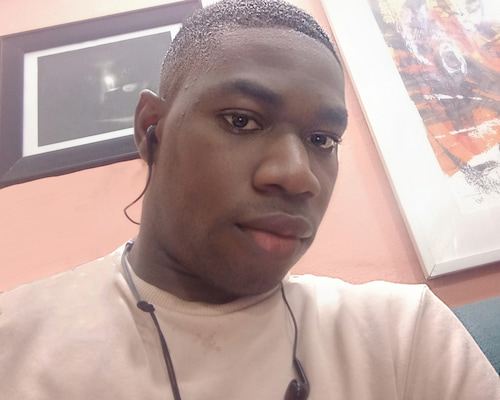
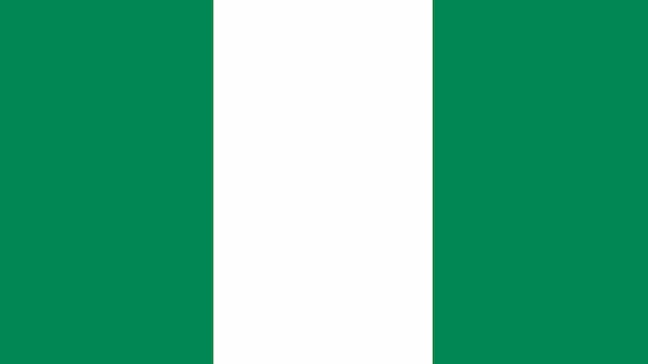

About Me
Profile

My name is Emmanuel Ndogo, and I’m a passionate learner, creative thinker, and aspiring web developer based in Lagos, Nigeria. I thrive on solving problems through technology and enjoy building digital experiences that are both functional and visually engaging. Whether I’m writing code, sketching out ideas, or collaborating with others, I bring energy and curiosity to everything I do.
Looking ahead, I’m excited to continue building my portfolio, contributing to open-source projects, and eventually launching my own digital products. My goal is to become a full-stack developer who can design, build, and deploy applications that make a difference. I’m driven by purpose, powered by curiosity, and always ready to take the next step forward.
Lagos, Nigeria

Nigeria is the most populous country in Africa and one of the continent’s largest economies. Rich in natural resources, especially oil and gas, Nigeria plays a vital role in global energy markets. Beyond its economic influence, Nigeria is a cultural powerhouse, home to hundreds of ethnic groups and languages, with vibrant traditions in music, film, literature, and fashion.
Lagos, Nigeria’s largest city and commercial capital, is a dynamic metropolis that never sleeps. With over 20 million residents, it’s one of the fastest-growing cities in the world. Lagos is known for its bustling markets, thriving tech scene, and iconic landmarks like the Third Mainland Bridge and Lekki Conservation Centre.